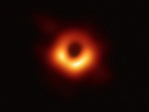
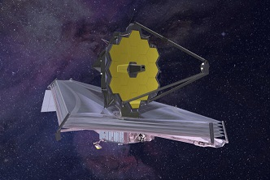

À la Poursuite des Mystères Cosmiques : L'Avenir des Trous Noirs
1. Télescopes à Ondes Gravitationnelles
L'avenir de l'observation des trous noirs s'annonce encore plus révolutionnaire avec l'utilisation de télescopes à ondes gravitationnelles. Ces instruments promettent de détecter des événements tels que la fusion de trous noirs, offrant une nouvelle fenêtre sur le cosmos.
Perspectives pour l'Avenir
1. Projets de Télescopes Spatiaux Avancés
Des projets tels que le James Webb Space Telescope (JWST) sont sur le point de renforcer notre capacité à étudier les trous noirs. Doté d'une sensibilité accrue dans l'infrarouge, le JWST devrait apporter de nouvelles réponses aux questions sur la formation et l'évolution des trous noirs.
2. Collaboration Internationale
L'avenir de la recherche sur les trous noirs repose sur la collaboration entre observatoires spatiaux, télescopes terrestres et missions interplanétaires. Des projets internationaux ambitieux viseront à coordonner les efforts pour comprendre pleinement ces objets cosmiques mystérieux.
Alors que nous nous aventurons plus profondément dans l'espace, les découvertes à venir sur les trous noirs s'annoncent passionnantes. Avec des technologies de pointe et une coopération internationale sans précédent, l'avenir de la recherche sur les trous noirs promet d'ouvrir de nouvelles perspectives sur la nature fondamentale de l'univers.